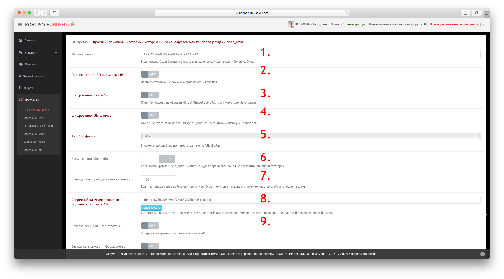

Описание панели лицензирования
Что умеет панель:
- Структурировать список лицензий с возможность поиска по списку.
- Возможность указания срока действия лицензии.
- Возможность задать триальное время работы продукта.
- Блокировка использования скрипта на домене одной кнопкой.
- Логирование доменов на которых скрипт был запущен без покупки.
- Автоматическая рассылка абуз владельцам доменов и хостерам сайтов из пункта 5.
- Добавление и мониторинг нескольких продуктов.
- Мониторинг целостности файлов нескольких версий одного продукта.
- Автоматическое генерирование готового кода проверки лицензии двух видов - С полем ввода ключа и Просто код проверки.
- Шифрование ответа API сервера лицензий.
- API для работы с панелью.
- Использование RSA для подписи.
- Сильный PHP обфускатор.
- Онлайн кодирование IonCube 9.
- Дешифратор меток файлов.
- Выдача lic ключей которые можно использовать как способ валидации лицензии.
- Полная автоматизация выдачи лицензий.
- Общий чёрный список доменов, почт и логинов любителей вареза, который ведут сами разработчики.
Главная страница:
- Меню навигации по разделам
- Информация о пользователе и уровне доступа, а так же о новых сообщениях и уведомлениях на форуме
- Общая статистика системы в реальном времени
- Новости панели
Теперь рассмотрим каждый раздел более подробно:
Раздел управления лицензиями
Список лицензий:
- Список лицензий
- Добавление лицензии
- Добавления ключа активации
- Общий id лицензии в системе
- id лицензии для управления через api
- Домен или домены на которых разрешено запускать продукт
- Последний ip с которого происходила проверка состояния лицензии
- Почта клиента
- Место покупки лицензии
- Номер чека
- Активационный ключ
- Дата добавления лицензии в систему
- Дата истечения лицензии
- Продукт к которому прикреплена лицензия
- Статус лицензии. На скриншоте лицензия в ожидании ввода ключа клиентом.
- Комментарий
- Действия. Отправить письмо с данными клиенту. Изменить лицензию. Удалить лицензию. Скачать lic файл.
Создание лицензии:
- Домен для которого выдаётся лицензия
- Почта клиента
- Место покупки лицензии (Может быть селект если указать в настройках перечень сайтов где продаётся продукт)
- Номер чека присвоенный сайтом продавцом при продаже продукта
- Срок действия лицензии
- Селект для выбора продукта для которого выдаётся лицензия
- Селект для выбора статуса лицензии
- Ключ лицензии который сгенерирован по маске в настройках
- Комментарий к лицензии
- Дополнительные параметры которые могут быть переданы в ответе api
Создание ключа лицензии:
- Продукт к которому создаётся ключ
- Сам ключ
Раздел управления продуктами
Список продуктов:
- Список продуктов
- Список версий продуктов
- Новый продукт
- Новая версия продукта
- Общий id продукта в системе
- id продукта для управления им через api
- Полное имя продукта (Отображается в активационных письмах)
- Короткое имя продукта (Отображается в списках)
- Дата добавления продукта
- Цена
- Общее количество лицензий к продукту в системе
- Цена*Количество
- Песочница (При любом статусе лицензии отдаёт код 203 - Продукт в режиме песочницы)
- Триал. Время которое продукт работает без покупки. Домен появляется в базе.
- Управление продуктом. Редактировать. Удалить.
Список версий продуктов:
- Общий id версии в системе
- id для управления версией с помощью api
- Идентификатор версии передаётся при проверке лицензии на продукт
- Дата добавления
- Продукт к которому принадлежит версия
- Хеши контролируемых файлов для проверки их целостности
- Действия. Удалить
Создание продукта:
- ID продукта на сайте liveopencart.ru
- ID продукта на сайте opencartforum.com
- ID продукта на сайте forum.devsaid.com
- Полное имя продукта
- Цена
- Короткое имя продукта
- Режим песочницы, при включении в любом случае api отвечает 20* кодом
- Триальный режим. Возможность работы скрипта без оплаты на срок указанный тут, далее блокируется
Создание версии продукта:
- .zip архив с файлами целостность которых нужно контролировать
- После нажатия нужно будет указать идентификатор версии и продукт.
Черный список
Сам список:
- Общий id записи в системе
- id для управления через api
- Домен
- Почта
- Ник
- Продукт
- Дата добавления
- Имя пользователя добавившего запись
- Основание для добавления
- Действия. Редактировать, удалить. Доступны только для того кто создал запись.
Добавление записи в список:
- Домен
- Почта
- Ник
- Продукт
- Основания
Лицензии которые подходят под любой из признаков подсвечиваются красным
Раздел обфускации кода и генерирования скриптов защиты
Раздел генерирования проверяющего скрипта для продукта:
Выбор продукта для которого генерируется скрипт и тип скрипта проверки:
- Генерирование скрипта проверки
- Обфускатор и онлайн кодирование IonCube 9
- Проверка lic файлов
- Декодер меток форума
- Выбор продукта
- Идентификатор версии для контроля целостности файлов
- Тип скрипта проверки
Раздел обфускации кода:
- Исходный код для обфускации
- Перемешивание строк. Код приобретает вид
PHP:
goto RIxzJFL9ViAqL8Zv;
bENHtaCGsiTMBPuC:
define("\x43\122\x59\120\x54\x5f\x52\x53\101\x5f\115\117\x44\105\x5f\111\x4e\124\105\122\x4e\101\x4c", 1);
goto ZjP0LGT6lJTfn9r_;
h0sX2ZYtppnG34GQ:
- Обфускация кода средствами php. После включения появятся поля с выбором профиля обфускации, а так же возможность зафиксировать имена сущностей PHP.
- Онлайн кодирование скрипта с помощью IonCube 9. После включения появятся поля с выбором версии PHP, лоадера и другими настройками IonCube.
Можно комбинировать возможности.
Инструмент проверки *.lic ключа на валидность:
- Выбираем файл
- Жмем проверить и получаем полную информацию по ключу
Инструмент поиска и расшифровки меток файлов:
- Вводим текстовую метку
- Или выбираем любой файл (из перечисленных расширений)
- Нажимаем и получаем строку в виде - ID-логин-почта пользователя который скачал этот файл с форума
Раздел настроек панели
Основные настройки панели:


- Маска по которой генерируется ключ при создании лицензии через панель
- При включенной опции ответ подписывается приватным ключом RSA
- При включенной опции ответ api шифруется ключом который будет введен в поле которое появится при включении опции
- При включенной опции содержимое *.lic файла шифруется ключом который будет введен в поле которое появится при включении опции
- Селект который укажет панели в каком виде хранить данные в *.lic ключе
- Время жизни lic файла
- При добавлении домена с неуказанным сроком окончания лицензии она автоматически записывается как time()+ указанное количество дней
- Секретный ключ который используется для создания хеша ответа api для проверки подлинности ответа
- Если опция включена то в ответе api при валидации домена будут содержаться все данные о лицензии
- Если опция включена то при создании лицензии через панель или api на почту которая указана в лицензии как почта клиента уйдет письмо с данными о лицензии и *.lic файлом
- Если опция включена то при создании лицензии через пкупку на этом форуме от имени разработчика ухоит личное сообщение покупателю с данными лицензии
- Список сайтов через ; для того чтобы в пункте 1.2.3 этого мануала был не инпут а селект для удобства создания лицензий
- Ключ для запуска задач по расписанию. (Сбор писем о покупке или рассылка писем пользователям)
Настройки RSA:
- Если включено используются Ваши ключи для подписи ответов api и *.lic ключей. Если выключено, наши.
- Приватный ключ, может быть введен в любом формате, автоматически отформатируется в строку.
- Публичный ключ, может быть введен в любом формате, автоматически отформатируется в строку.
Интеграция с сайтами для получения от них информации о покупке:
- Автоматический приём и обработка данных о покупке из писем от сервисов и ресурсов не имеющих api.
- URL который нужно добавить в планировщик для запуска процесса сбора писем.
- Почтовый ящик на который приходят письма о покупке.
- Пароль от этого ящика.
- Источник писем о покупке.
- Автоматический приём данных о покупке от сайта liveopencart.ru
- Ключ для проверки подлинности сгенерированный в кабинете liveopencart.ru
- Если включено, при получении данных автоматически будет выдан ключ.
- ID пользователя на форуме для привязки аккаунта в панели к аккаунту на форуме
- Секретный ключ для гарантии того что информация пришла с форума и для проверки что Вы привязываете своего пользователя а не чужого.
Настройки почтовых уведомлений:
Нужно для автоматической рассылки писем об истечении лицензии.
- Включение и отключение опции
- SMTP сервер
- Почтовый ящик с которого слать письма
- Пароль от него
- SMTP порт
- Можно указать адрес на который принимать ответы на письма
- SSL\TLS
Шаблоны писем:
- Использовать свои шаблоны или встроенные
- URL который нужно добавить в планировщик для запуска процесса рассылки писем.
- Тема письма активации лицензии
- Шаблон письма активации лицензии
- Тема письма о скором истечении лицензии
- Шаблон письма о скором истечении лицензии
- Тема письма с жалобой о незаконном использовании продукта
- Шаблон письма с жалобой о незаконном использовании продукта
Ключи api:
- Общий id ключа
- Ключ
- Пользователь владелец ключа
- IP последнего подключения с использованием ключа
- Дата создания ключа
- Права на добавление лицензий/продуктов. Переключается нажатием
- Права на добавление лицензий с статусом "В процессе". Переключается нажатием
- Права на изменение статуса лицензий. Переключается нажатием
- Права на удаление лицензий. Переключается нажатием
- Права на получение информации о лицензии. Переключается нажатием
- Статус ключа
- Удалить ключ
- Генерирование ключа
Обновлено. Редакция от 08.01.2017 - версия панели 2.1.0